| 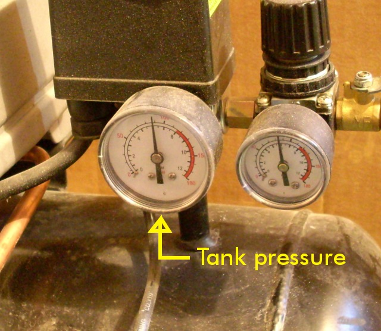 | 1. Verify the stored tank pressure is at least 85 psi. If not, activate the air compressor to fill the tank. |
| 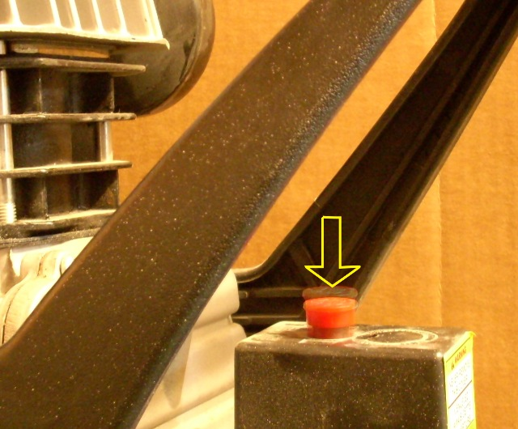 | 2. Turn off the air compressor. |
| 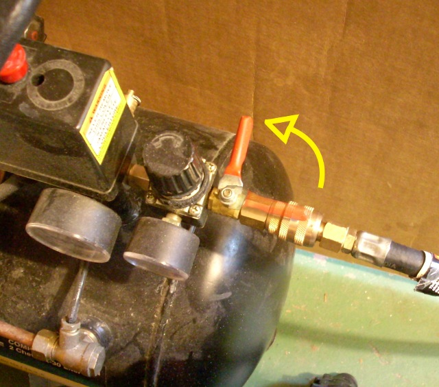 | 3. Close the tank valve to capture the air pressure. |
| 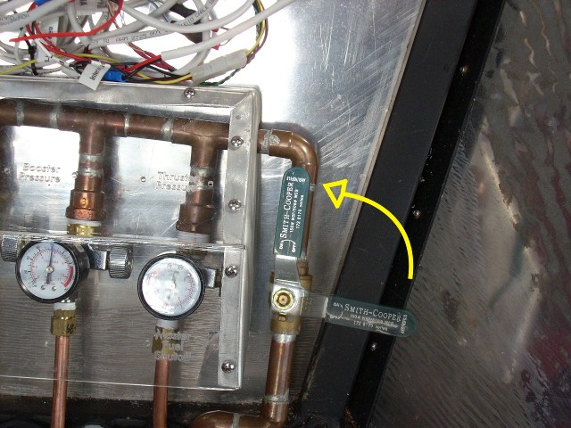 | 4. Open the rocket supply valve. |
| 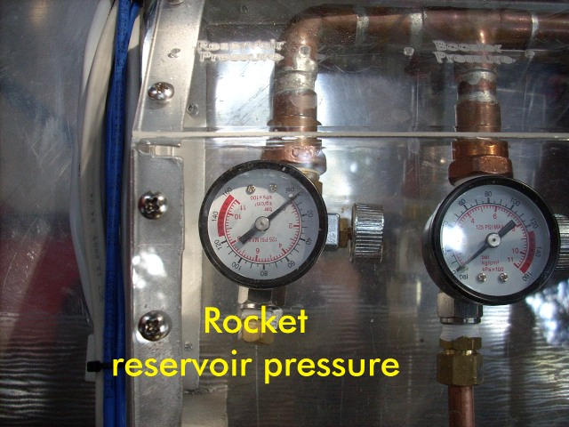 |
5.
Fire the thrusters / run the reservoir drain sequence
until the reservoir pressure is released.
(This step is optional; it avoids a noisy decompression when removing the hose.) |
| 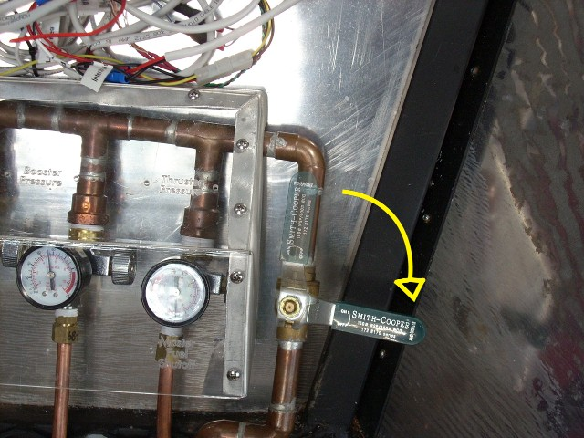 | 6. Close the rocket supply valve. |
| 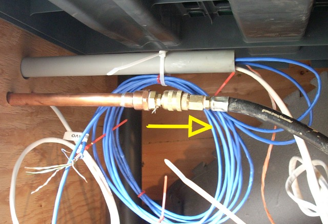 | 7. Disconnect the compressor hose from the air supply pipe. |
| 8. Unplug the air compressor. Roll the compressor out to the water valve. | |
| 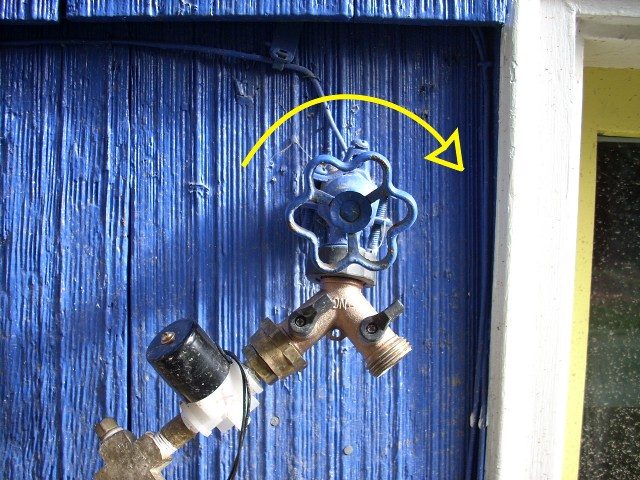 | 9. Ensure that the water valve is closed. |
| 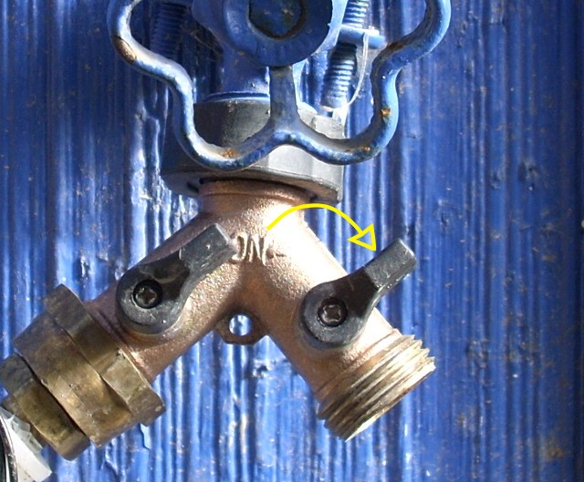 | 10. Ensure that at least one Y-manifold valves is closed, to prevent pressure from escaping at supply end. |
| 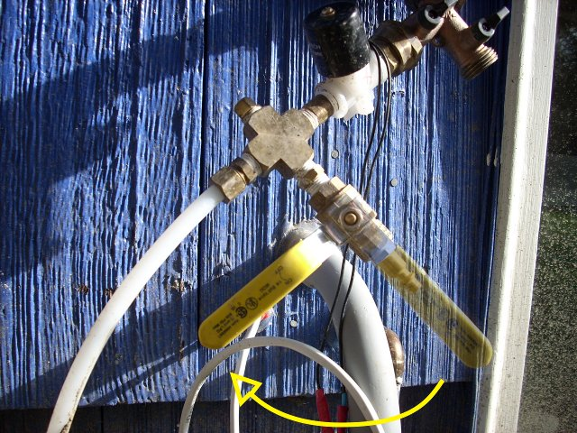 | 11. Ensure that the purge valve is closed. |
| 12. Attach the compressor hose to the purge port. | |
| 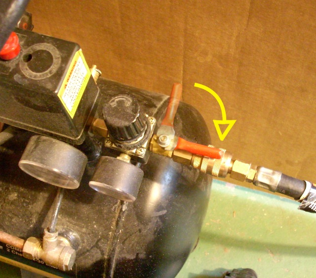 | 13. Open the tank valve. |
| 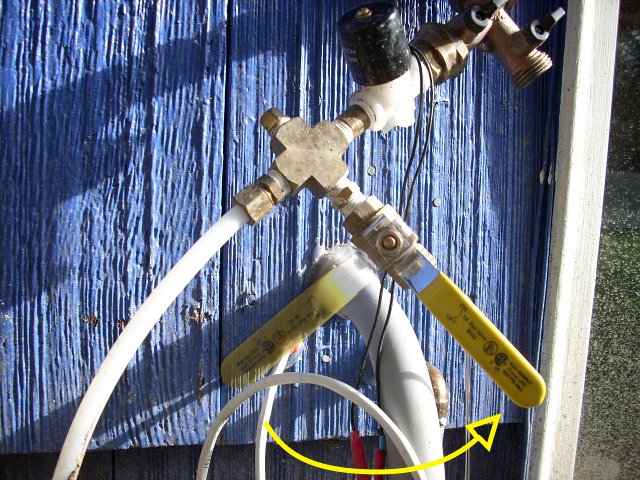 | 14. Open the purge valve. Air pressure should blow water out into the rocket water reservoir. |
| 15. After 10-15 seconds, the water should stop burbling, and you will hear only air blowing. Close the tank valve. | |
| 16. Close the purge valve. | |
| (no photo) | 17. Open the reservoir cap to drain the reservoir water onto the ground. Replace cap. |
| 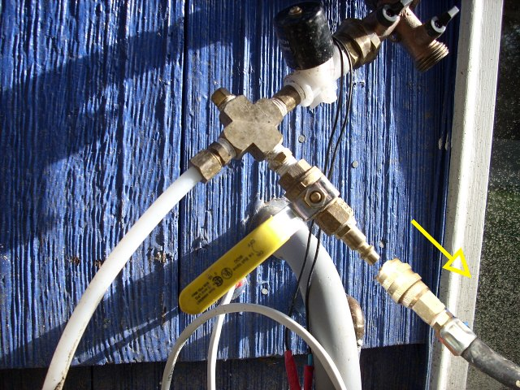 | 18. Disconnect the compressor hose from the purge port. |
| 19. Unplug the air compressor. Roll the compressor back inside, and plug it in. | |
| 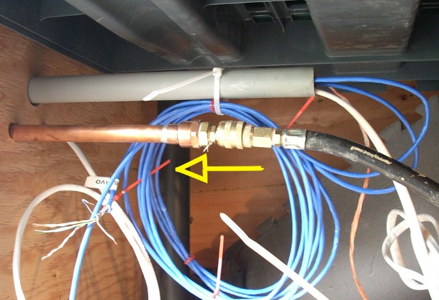 | 20. Reconnect the hose quick-release to the rocket supply line. |
| 21. Open the tank valve. | |
| 22. Turn on the compressor switch. |